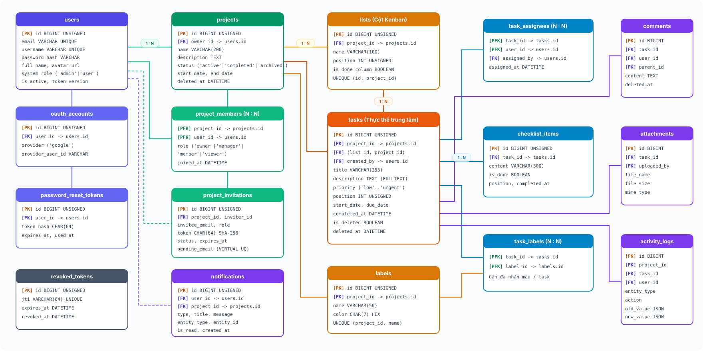

AGILE WORKSPACE
Hệ thống Quản lý Dự án & Điều phối Công việc Nhóm theo Thời gian thực.
PHẦN 1 · GIỚI THIỆU SẢN PHẨM
Tổng quan nền tảng Agile Workspace, đối tượng sử dụng & công nghệ Full-stack cốt lõi.
PHẦN 2 · MÔ TẢ CHI TIẾT SẢN PHẨM
- 2.1. Lý do chọn dự án & Bài toán thực tiễn
- 2.2. Các phân hệ chức năng & Phân quyền RBAC
- 2.3. Sơ đồ Thực thể Liên kết (ERD) 16 bảng MySQL
- 2.4. Điểm hạn chế & Hướng phát triển tương lai
PHẦN 3 · LIVE DEMO & VẤN ĐÁP (Q&A)
Trình diễn trực tiếp lời mời & kéo thả Kanban Realtime trên Vercel.
Agile Workspace — Nền tảng Quản lý Công việc Nhóm Chuẩn Agile
Không gian làm việc trực tuyến giúp các nhóm lập kế hoạch, phân công, kéo thả bảng Kanban và đo lường tiến độ theo thời gian thực.
Sản phẩm là gì?
Hệ thống quản trị dự án & điều phối đầu việc tập trung theo mô hình bảng Kanban hiện đại.
Đối tượng hướng tới
Nhóm sinh viên làm đồ án, đội phát triển phần mềm Scrum/Agile, các nhóm vận hành vừa và nhỏ.
Điểm khác biệt cốt lõi
Giao diện Clean SaaS không nháy trang, đồng bộ kéo thả thẻ & thông báo lời mời tức thì 0ms qua WebSocket.
Triển khai thực tế
Hoạt động trực tuyến qua HTTPS trên Vercel CDN kết nối tới cụm máy chủ FastAPI & MySQL 8.0.
- HTML5 / CSS3 Design System & Icon tối giản
- JavaScript ES6+ & Axios tự động gia hạn JWT
- HTML5 Drag & Drop Optimistic UI mượt mà
- 12 trang giao diện + Thanh tìm kiếm phím tắt
/
- FastAPI + Uvicorn bất đồng bộ hiệu năng cao
- SQLAlchemy 2.0 ORM & Pydantic v2 kiểm duyệt
- Bảo mật Bcrypt, JWT Revocation & Google OAuth 2.0
- 40+ REST Endpoints & 2 kênh WebSocket Realtime
- 16 bảng chuẩn hóa InnoDB (UTF8MB4)
- Giao dịch ACID & khóa dòng chống xung đột
- Lưu trữ dự án chỉ đọc & Thùng rác khôi phục
- Nhật ký kiểm vết lịch sử thay đổi dạng JSON
Tại Sao Nhóm Lựa Chọn Đề Tài Agile Workspace?
1. Khắc phục thất lạc đầu việc qua nhóm chat
Giao việc qua Zalo/Messenger khiến yêu cầu nhanh chóng bị trôi, không rõ ai phụ trách chính, thiếu hạn chót và tài liệu đính kèm nằm rải rác.
➔ Tập trung mọi mô tả, checklist con, bình luận và tệp đính kèm vào từng thẻ việc trên bảng Kanban.
2. Đo lường minh bạch đóng góp của từng thành viên
Trong làm việc nhóm, nhóm trưởng rất khó định lượng chính xác mỗi người đang gánh bao nhiêu phần trăm dự án hay ai có việc quá hạn.
➔ Xây dựng Tab Thống kê Công việc tự động tính % khối lượng đảm nhận và tiến độ hoàn thành từng cá nhân.
3. Xóa bỏ độ trễ thông tin khi cộng tác từ xa
Các công cụ bảng tính tĩnh bắt buộc thành viên phải hỏi thủ công hoặc nhấn tải lại trang (F5) liên tục mới biết trạng thái công việc mới.
➔ Tích hợp WebSocket đẩy thông báo lời mời và chuyển động kéo thả thẻ tức thì sang mọi màn hình.
4. Bao quát trọn vẹn kiến thức Kỹ thuật Phần mềm
Đề tài hội tụ các bài toán thực tế có chiều sâu: thiết kế ERD chuẩn hóa 3NF, xác thực Google OAuth2/JWT, phân quyền RBAC 4 cấp và kiểm thử tự động.
➔ Giúp cả 5 thành viên rèn luyện quy trình phát triển sản phẩm hoàn chỉnh từ CSDL đến Cloud.
6 Phân Hệ Chức Năng Chính & Cơ Chế Phân Quyền Dự Án (RBAC)
1. Xác thực & Quản trị Tài khoản
Đăng nhập JWT & Google OAuth 2.0, tự động gia hạn Refresh Token, đổi mật khẩu thu hồi phiên cũ và trang Admin khóa/mở khóa người dùng.
2. Quản lý Dự án & Tìm kiếm Phím tắt
Tự sinh 3 cột mặc định; hỗ trợ Lưu trữ chỉ đọc kèm 2 nút Khôi phục / Xoá; nhấn phím / dùng mũi tên ↑ ↓ tìm nhanh toàn cục.
3. Lời mời & Thông báo Realtime
Mời qua email băm SHA-256; người nhận nổi ngay Toast thông báo và tăng số chuông mà không cần tải lại trang.
4. Bảng Kanban Kéo thả Không nháy
Tùy biến thêm/sửa/kéo thả cột, đánh dấu Cột Hoàn thành; kéo thả thẻ mượt 0ms và đồng bộ trực tiếp sang màn hình thành viên khác.
5. Hồ sơ Công việc 360° & Thùng rác
Độ ưu tiên, hạn chót, giao nhiều người, nhãn màu, Checklist tự tính %, bình luận, đính kèm tệp (kiểm tra Magic Bytes) & Thùng rác.
6. Thống kê Thành viên & Nhật ký
Tab Thống kê đo tỷ lệ % khối lượng dự án và hoàn thành của từng thành viên; Nhật ký lưu vết mọi thay đổi dạng JSON.
Toàn quyền dự án, chuyển quyền Owner, lưu trữ, khôi phục & xóa dự án.
Quản lý cột Kanban, mời Member/Viewer, điều phối việc & Thùng rác.
Tạo, sửa, kéo thả công việc, nhận giao việc, checklist, bình luận & tệp.
Chế độ chỉ xem tiến độ & thống kê, không chỉnh sửa hay nhận việc.
Sơ Đồ Thực Thể Liên Kết (ERD) — 16 Bảng MySQL 8.0 Chuẩn Hóa

4 Điểm Sáng Kỹ Thuật Trong Thiết Kế ERD & Ràng Buộc MySQL
1. Chuẩn hóa Quan hệ Nhiều – Nhiều (N : N) đạt 3NF
project_members(project_id, user_id): Liên kết thành viên vào dự án kèm vai tròrole.task_assignees(task_id, user_id): Cho phép phân công nhiều người cùng thực hiện 1 công việc.task_labels(task_id, label_id): Gắn linh hoạt nhiều nhãn màu phân loại trên từng thẻ việc.
2. Khóa Ngoại Kép (Composite Foreign Key) Chống Lệch Dự Án
- Bảng
listskhai báo khóa duy nhất képUNIQUE (id, project_id). - Bảng
taskstham chiếu đồng thời(list_id, project_id) -> lists(id, project_id). - Ngăn chặn tuyệt đối rủi ro gắn nhầm công việc của Dự án A sang cột Kanban của Dự án B.
3. Cột Ảo Sinh Tự Động (Virtual Generated Column)
- Bảng
project_invitationssử dụng cột ảopending_emailchỉ sinh giá trị khistatus = 'pending'. - Kết hợp
UNIQUE (project_id, pending_email)chặn tuyệt đối 2 lời mời trùng email đang chờ ở tầng DB, nhưng vẫn cho phép mời lại nếu lời mời cũ đã hết hạn/hủy.
4. Tự Tham chiếu Đệ quy, Xóa mềm & Kiểm vết JSON
comments.parent_id -> comments.idhỗ trợ cấu trúc bình luận phản hồi đa cấp.- Cột
deleted_at/is_deletedbảo toàn khóa ngoại lịch sử khi lưu trữ dự án hoặc đưa việc vào Thùng rác. activity_logslưu cặpold_value&new_valuekiểuJSONphục vụ kiểm toán.
Điểm Hạn Chế Hiện Tại & Hướng Phát Triển Trong Tương Lai
1. Chưa gửi Email SMTP tự động ra ngoài
Với người chưa có tài khoản trên hệ thống, người mời cần sao chép liên kết lời mời thủ công thay vì tự động nhận thư qua hộp mail.
2. Tệp đính kèm còn lưu trên ổ đĩa máy chủ cục bộ
Đang giới hạn 10MB/tệp trên thư mục máy chủ, chưa tối ưu khi triển khai phân tán nhiều container Serverless.
3. Chưa có góc nhìn Biểu đồ Gantt & Lịch biểu
Mới tập trung vào Bảng Kanban, Danh sách bảng và Thống kê thành viên; thiếu biểu đồ đường găng theo tháng/quý.
4. WebSocket quản lý trong RAM đơn tiến trình
Phù hợp quy mô vừa và nhỏ; khi mở rộng hàng chục máy chủ song song sẽ cần thêm tầng đồng bộ tin nhắn trung gian.
1. Tích hợp SendGrid Email & Nhắc hạn Tự động
Tự động gửi email kèm nút Chấp nhận lời mời và chạy tác vụ nền (Celery/Cron) nhắc việc sắp đến hạn trước 24 giờ.
2. Lưu trữ Đám mây AWS S3 / Cloudinary
Đưa toàn bộ tệp đính kèm lên Object Storage có CDN tốc độ cao và hỗ trợ xem trước trực tiếp PDF/Ảnh ngay trên thẻ.
3. Bổ sung Gantt Chart, Google Calendar & App Mobile
Trực quan hóa tiến độ dài hạn, đồng bộ lịch cá nhân và phát triển ứng dụng di động nhận thông báo đẩy (Push Notification).
4. Mở rộng Redis Pub/Sub & Trợ lý AI Agile
Đồng bộ WebSocket đa cụm máy chủ qua Redis; tích hợp AI tự động gợi ý chia nhỏ Checklist từ mô tả công việc.
Trình Diễn Sản Phẩm Thực Tế (Live Demo) & Vấn Đáp (Q&A)
Đăng nhập & Tìm kiếm Phím /
Trải nghiệm Dashboard, điều hướng bàn phím ↑ ↓ và Lưu trữ / Khôi phục dự án.
Lời mời Dự án Realtime
Gửi lời mời ở màn hình A — Màn hình B nổi thông báo tức thì không cần tải lại trang.
Kéo thả Kanban Realtime
Kéo thẻ công việc sang cột Hoàn thành và quan sát đồng bộ trực tiếp giữa 2 cửa sổ.
Thống kê Tỷ lệ Thành viên
Kiểm tra tỷ lệ % đóng góp của từng cá nhân trong dự án & Nhật ký hoạt động.
XIN TRÂN TRỌNG CẢM ƠN THẦY NGUYỄN HỮU MINH DƯƠNG VÀ CÁC BẠN!
Nhóm thực hiện: Nghiêm Đình Bình (Nhóm trưởng) · Nguyễn Quý Dũng · Lê Minh Sơn · Hà Đức Minh · Nguyễn Tấn Dũng